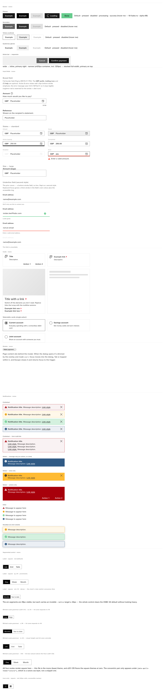
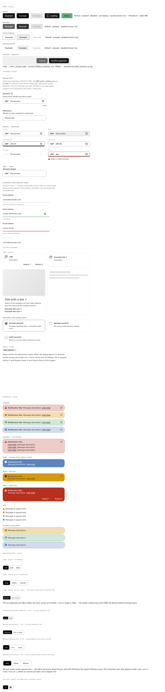
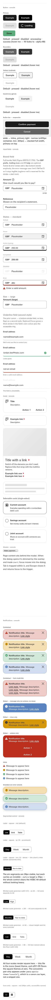
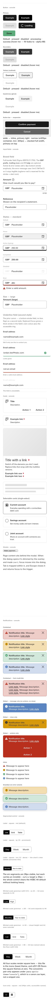
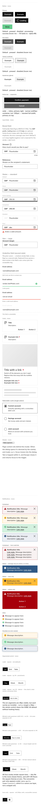
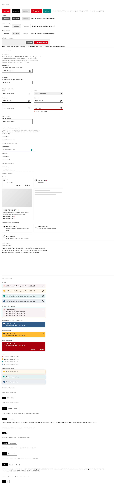
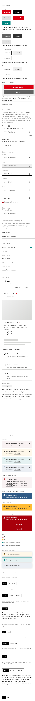
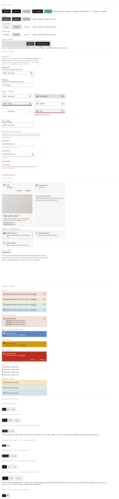
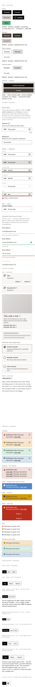

Your ruling of 3 September, "The radii is only for console": control 6, surface 8, container 12; segmented xs 4/2, s 6/4, m 8/6, l 10/6. Console first; the other three themes follow and should not move. Pixel difference per pair: {"mono-1440": 0, "mono-390": 0, "legacy-1440": 0, "legacy-390": 0, "console-1440": 18816, "console-390": 18760, "supercharge-1440": 0, "supercharge-390": 0}. Rendered at the seat with the HSBC face resolved by canvas probe.













